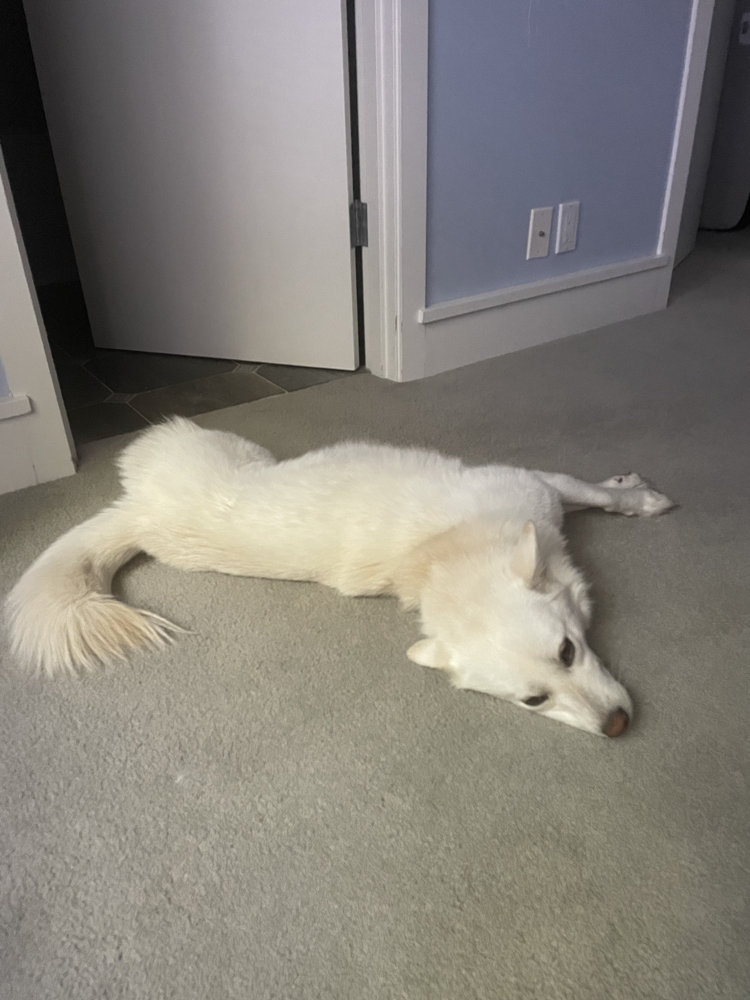

Tofu!
Tofu is my adorable dog who is named after the white food she looks like (although her tail resembles a crisp marshmallow more).
She's really friendly and energetic when it comes to meeting other pets. When meeting humans, she's a bit more skiddish.

| 
|  |
| Breed | Korean Jindo |
|---|---|
| Age | ~3 years! |
| Adoption Month | July |
| Weight | 34 lbs |
Here are some of Tofu's likes and dislikes:
- Chasing rabbits and squirrels. (Jindos are originally hunting dogs so she enjoys chasing prey.)
- Other dogs. (She loves playing tag with other dogs specifically.)
- Chewing toys. (She doesn't usually, but when she does, she often chews her toys instead of playing normally.)
- Sleeping on chairs. (She always jumps up onto the couch or chair to sleep.)
- Too short or too long walks. (It has to be just right, around an hour to two hours.)
- Strangers IN HOUSE. (Originally a hunting dog, jindos are generally protective and Tofu often acts like a guard dog, barking at any strangers in the house. She's more docile outside with strangers.)
- That the ciriculum has alot of discussions
instead of the tons of writing in my old school.